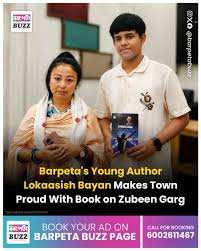
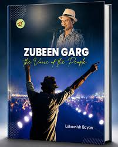
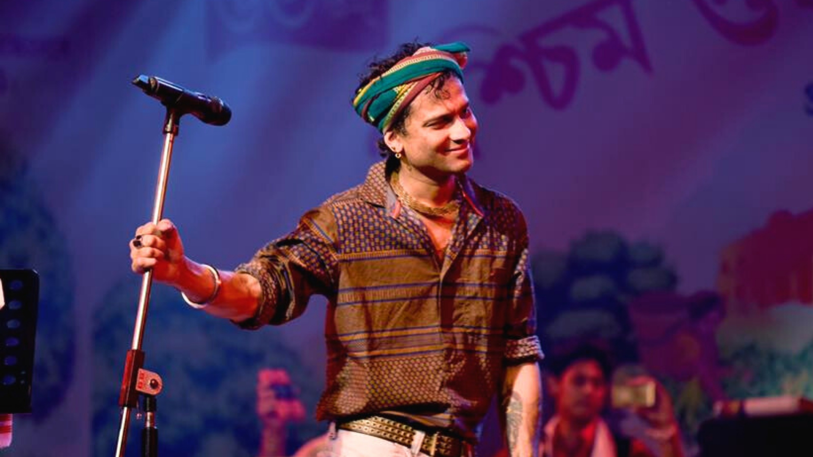

📖 Truth of Lokaasish Bayan
Discover the inspiring journey, achievements, works, and contribution
of the young Assamese author Lokaasish Bayan.
Explore Now ↓
📢‼️Disclaimer‼️📢
This website is created for entertainment and
humorous purposes only. It is not intended to compare anyone, disrespect any person, profession, or work. The
content on this website represents fictional ideas, theories, or personal opinions only. Please view this
website for entertainment purposes and do not take its content seriously.
Introduction of Lokaasish Bayan :
📚✨ Lokaasish Bayan is a young author, writer, and student from Barpeta, Assam, who earned recognition for his
passion for Assamese literature and culture at an early age. 🎓 While studying in Class 10, he wrote and
published the book Zubeen Garg: The Voice of the People as a heartfelt tribute to one of Assam's most celebrated
cultural icons, Zubeen Garg. 🎤🎶 His work reflects his deep admiration for Assamese music, heritage, and the
inspiring journey of the legendary artist. 🌟 The book was officially unveiled at Jyoti Chitraban, marking a
remarkable achievement for such a young writer. 🏆 Through his dedication to writing, research, and creativity,
Lokaasish Bayan has inspired many students and young readers across Assam, proving that age is never a barrier
to learning, dreaming big, and achieving success. 🚀📖 His journey encourages the younger generation to value
their culture, pursue knowledge, and express their ideas with confidence and imagination. 🌍💡
Family information of Lokaasish Bayan :
🔒 Detailed information about the family of Lokaasish Bayan is not publicly available. The author has chosen to
keep his personal and family life private. 📚 Most publicly available sources focus on his literary work,
especially his book Zubeen Garg: The Voice of People, rather than his family background. ✍️ Therefore, there is
no verified information about his parents, siblings, spouse, or other family members in the public domain. 🌟
His work as an author continues to receive recognition, while his personal life remains private and respected.
📖 Lokaasish Bayan's Work in Zubeen Garg: The Voice of People :
✍️ In Zubeen Garg: The Voice of People, Lokaasish Bayan has written a detailed and inspiring biography of one of
Assam's most admired musicians, Zubeen Garg. 🎵 The book beautifully describes Zubeen Garg's life, beginning
with his childhood and early interest in music, and follows his journey to becoming a renowned singer, composer,
lyricist, music director, actor, and cultural icon. 🌟 The author explains how Zubeen's talent, determination,
hard work, and passion for music helped him overcome challenges and achieve great success. 📚 The book also
highlights his remarkable ability to perform in several languages while preserving and promoting the rich
culture and traditions of Assam. 🎶 Lokaasish Bayan shows how Zubeen's songs express the emotions, hopes,
dreams, and struggles of ordinary people, which is why he is often regarded as the "Voice of the People." ❤️ The
biography also discusses his valuable contributions to Assamese music and cinema, his influence on young
artists, and his dedication to society through music and cultural activities. 🌍 Throughout the book, the author
presents inspiring facts, meaningful stories, and important achievements that help readers understand Zubeen
Garg's extraordinary personality and lasting impact on the people of Assam and beyond. ⭐ By writing this
biography, Lokaasish Bayan not only honours the life and achievements of Zubeen Garg but also encourages readers
to appreciate Assamese culture, work hard to achieve their dreams, and use their talents to make a positive
contribution to society.


🎵Zubeen Garg: The Heartthrob of Assam (Optional Study Topic)
🌟🎼 Zubeen Garg is one of the greatest musical icons of Assam and one of the most influential artists from
Northeast India. ❤️🎵 Throughout his long and successful career, he has inspired millions of people with his
extraordinary talent, creativity, and dedication to music. 🎙️🎹 As a singer, composer, lyricist, music
director, actor, filmmaker, and producer, he has made invaluable contributions to Assamese culture and the
Indian music industry. 🌍✨ His voice is admired for its power, emotion, and versatility, allowing him to perform
a wide variety of musical styles, including modern Assamese songs, folk music, classical-inspired melodies,
devotional songs, romantic ballads, patriotic music, and film soundtracks. 🎶🎧🎻 His ability to sing in several
Indian languages has earned him recognition and appreciation far beyond the borders of Assam. 🏆👏
🎼🌿 One of Zubeen Garg's greatest achievements is his contribution to preserving and promoting Assamese
language, music, and culture. 🪷🏞️ By blending traditional Assamese folk melodies with modern musical
arrangements, he has introduced the beauty of Assam's rich heritage to audiences across India and around the
world. 🌏🎵 His songs often express love ❤️, hope 🌈, patriotism 🇮🇳, humanity 🤝, and the emotions of ordinary
people 😊, making them meaningful and timeless. ⏳💖 His music has touched the hearts of listeners of all ages
👨👩👧👦 and continues to inspire new generations of musicians and music lovers. 🎤🎸
🎬🎥 Beyond music, Zubeen Garg has made significant contributions to Assamese cinema by composing memorable film
soundtracks 🎼, acting in films 🎭, and supporting the growth of the regional entertainment industry. 🌟🎞️ His
creative vision and artistic excellence have helped raise the standards of Assamese films and encouraged many
young artists 🌱 to pursue careers in music and cinema. 🎬🎶 Throughout his journey, he has demonstrated that
talent 💡, hard work 💪, discipline 📖, and dedication ❤️ can overcome challenges and lead to extraordinary
success. 🏅 His achievements have brought pride to Assam 🌺 and strengthened the cultural identity of the
region. 🏵️
💖🎤 What makes Zubeen Garg truly special is not only his remarkable talent but also the deep emotional
connection he shares with his audience. 🤗🎶 His songs have accompanied people through moments of joy 😊,
celebration 🎉, hope 🌅, love ❤️, and reflection 🌠. For countless admirers, his music is more than
entertainment—it is a source of comfort 🕊️, inspiration ✨, and cultural pride 🌸. His lifelong commitment to
artistic excellence has earned him immense respect 🙏 from fans, fellow musicians 🎼, and the wider community.
🌍👏
🙏👑 To millions of admirers, Zubeen Garg is like a god. 🌟❤️ His music has inspired generations, brought hope
to countless people 🌈, and filled the hearts of his fans with pride and joy. 💖🎵 Many people in Assam deeply
respect and admire him for his extraordinary talent, dedication, and immense contribution to music and culture.
🌺🎤 For his admirers, his voice is unforgettable 🎙️, his work is timeless ⏳, and his legacy is priceless. 💎✨
He will always remain a legendary figure 🏆 whose influence continues to inspire people across generations.
🌍🎶🙌

❤️🎵Zubeen Garg: The Heartthrob of Assam🎵❤️